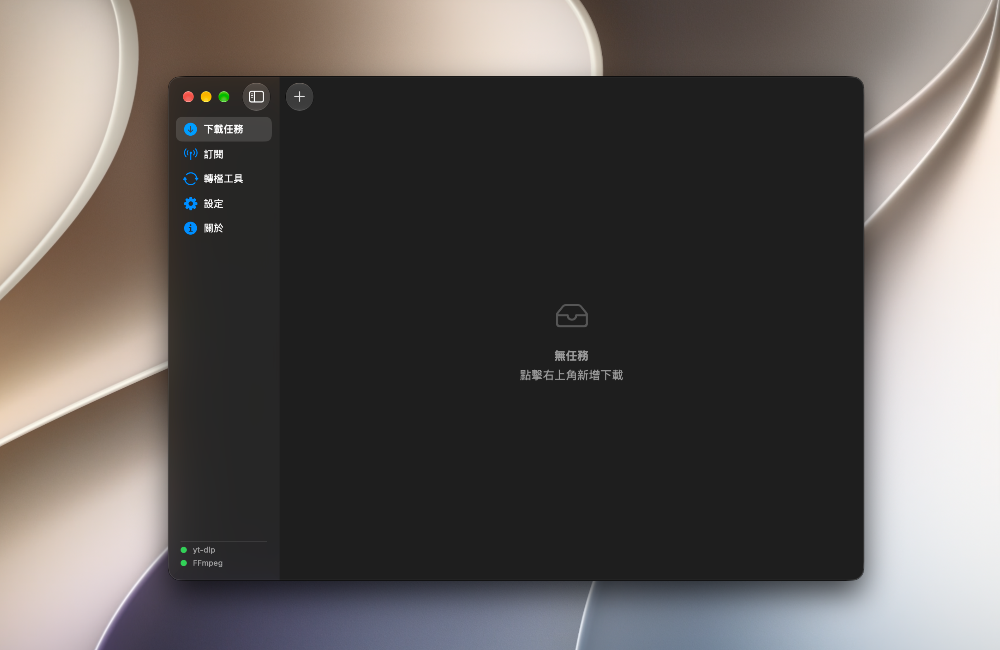
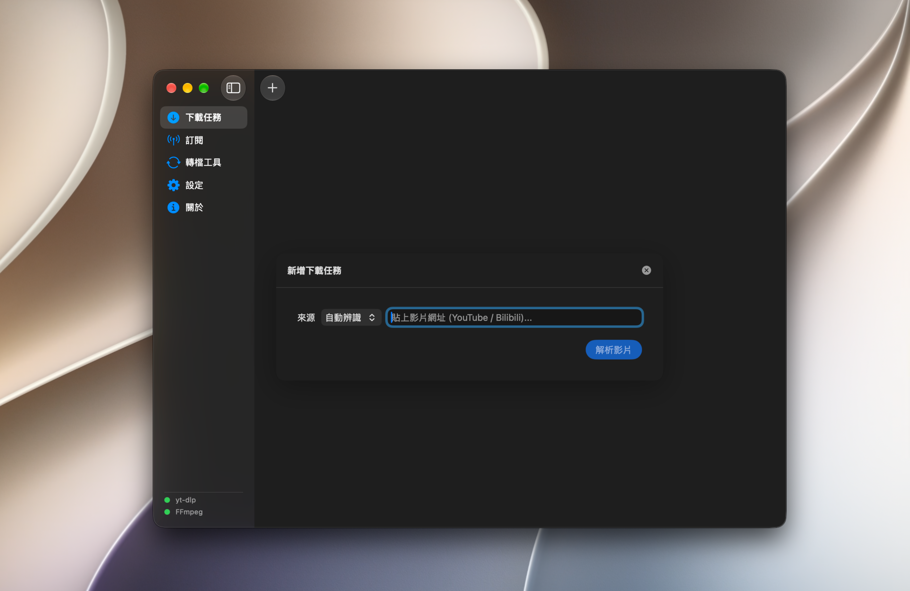
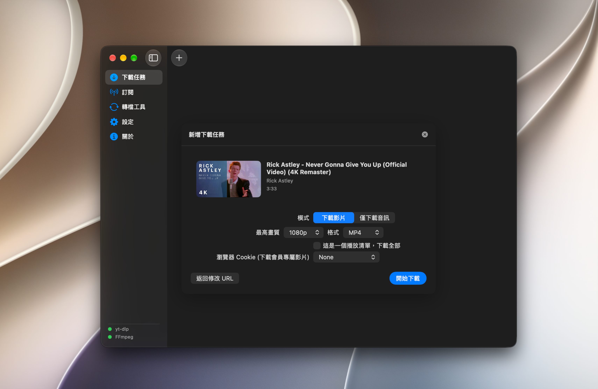
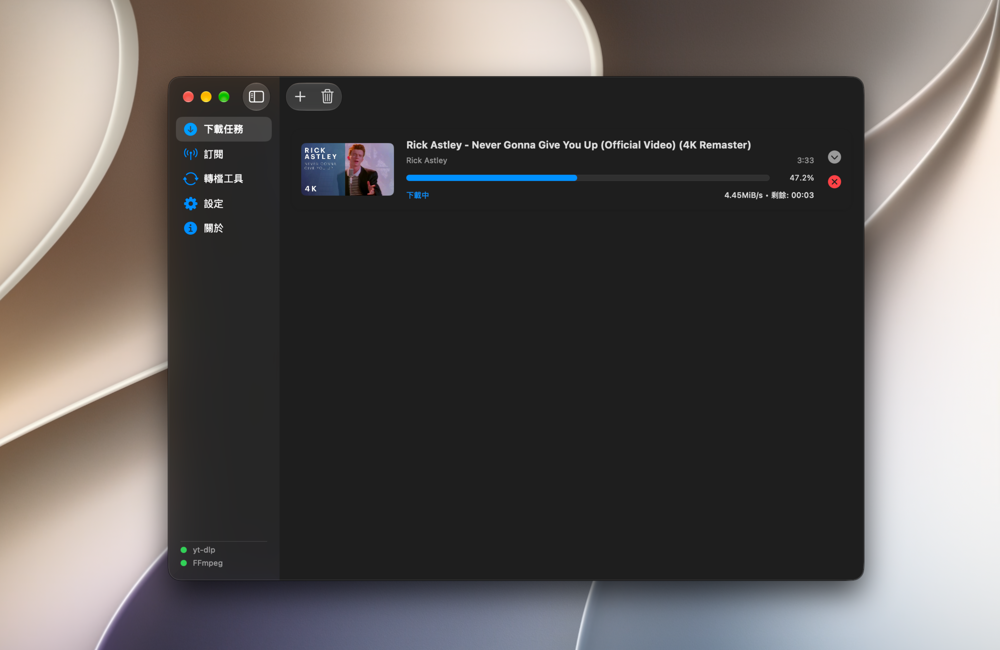
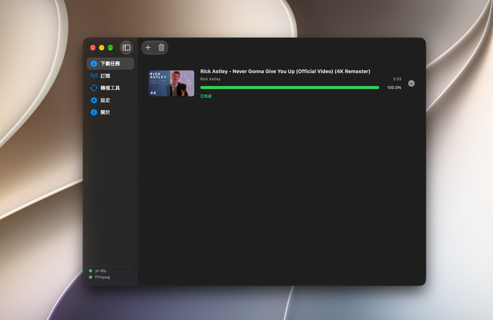
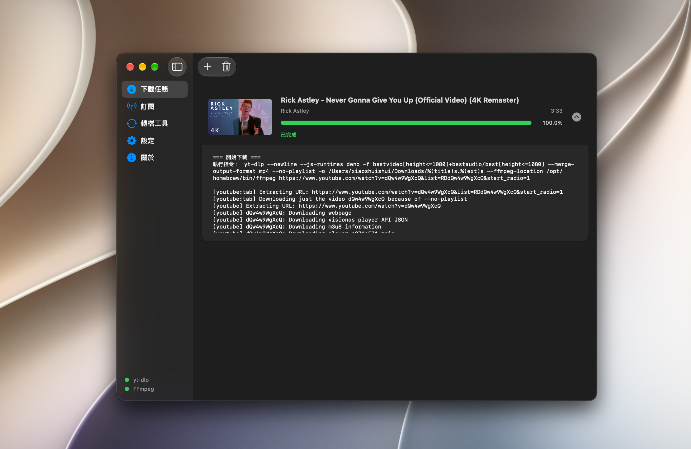

原生 macOS 介面
使用 SwiftUI 建構，融入熟悉的 Mac 操作方式，讓介面與系統保持一致。
MediaFetch 是一款為 macOS 打造的開源媒體下載工具。以原生介面管理下載任務，讓影片下載與檔案整理更直覺。
macOS 原生體驗 · 開源自由 · 由開發者持續改進

透過清楚的任務流程與原生介面，讓下載工作更容易管理。
使用 SwiftUI 建構，融入熟悉的 Mac 操作方式，讓介面與系統保持一致。
透過 yt-dlp 處理支援的媒體來源，並以任務介面追蹤下載進度。
查看下載過程中的訊息，讓問題排查與任務狀態更容易理解。
在支援的下載任務中解析可用格式，依需求選擇合適的媒體品質。
搭配 FFmpeg 支援相關媒體處理工作；實際功能取決於工具設定。
管理工具路徑與輸出位置，依照自己的工作方式安排下載任務。
看看 MediaFetch 的實際介面，從建立任務到查看下載日誌。

從連結開始你的下載流程。

檢視解析結果與可用的下載選項。

查看下載任務的進行狀態。

清楚確認任務完成狀態。

需要排查問題時，日誌能提供更多資訊。
從 GitHub 取得版本，依照專案說明完成必要設定。
前往 GitHub Releases，查看最新發佈內容並下載對應檔案。
依照 README 安裝或設定 yt-dlp 與 FFmpeg，再確認工具路徑。
開啟 MediaFetch、建立下載任務，並在介面中查看進度。
探索最新版本、閱讀設定說明，或直接瀏覽原始碼。
注意：macOS 首次開啟時可能顯示安全性提示。請先閱讀 GitHub 專案中的安裝說明，並確認下載檔案來源。